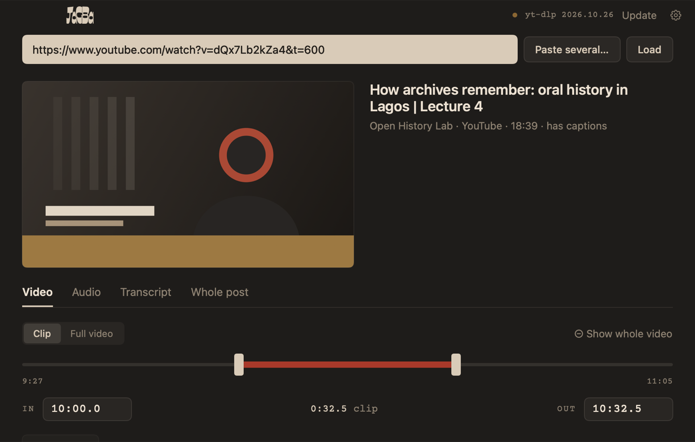

Save just the part you need.
A clip from an hour-long video, just the audio, a transcript you can quote, or every slide of an Instagram post. Free, for Mac.
JAGBA is a Mac app. Send this page to yourself (or AirDrop it to your Mac) and open it there.
Preview copy: the download button works once this page is published on GitHub Pages.

One link, four ways to save it
Works with YouTube, TikTok, Instagram, X, Vimeo and many more. Paste several links at once to save them all.
Three steps, once
Download and move it to Applications
Open the downloaded zip, then drag JAGBA into your Applications folder.
Allow it to open
JAGBA isn't from the App Store, so the first time you open it macOS says it can't verify it. Click Done, then:
Open System Settings › Privacy & Security, scroll down to the message about JAGBA, click Open Anyway, enter your password, and click Open.
You only do this once. After that, JAGBA opens like any other app.
Let it set up
On first launch JAGBA downloads its download engine (yt-dlp). If it offers Install ffmpeg or Install Deno, click them: ffmpeg cuts clips and makes transcripts, Deno is needed for YouTube. Every tool is checked against its official checksum before it's installed.
Private posts and Instagram
Public videos need no login. When a site asks for one (Instagram usually does), JAGBA borrows the login from a browser you choose under Change. It never sees your password, and it's only used when a site asks.
| Opera, Vivaldi, Firefox, Brave, Edge | Usually work right away. Just log in to the site in that browser first. |
| Chrome, Safari | macOS protects their logins. Allow JAGBA under Privacy & Security › Full Disk Access, then reopen JAGBA. This lets JAGBA read all your files, so only do it if you're comfortable with that. |
| If macOS asks about “Safe Storage” | Click Allow, not Always Allow, so nothing can read your logins silently later. |
Good to know
Does it work on Windows or iPhone?
No, JAGBA is Mac only for now (macOS 14 Sonoma or newer).
Is it free?
Yes. No account, no ads, no tracking.
A site stopped working
Sites change often. Click Update next to the yt-dlp version at the top of the window. JAGBA also checks for engine updates every day, and tells you when a new version of JAGBA itself is out.
Is it safe? What does it send?
Nothing leaves your Mac except the requests to the sites you download from. Transcripts are made on your Mac. The source code is public, so anyone can check what it does.
What can I use it for?
JAGBA is made for research, teaching and quoting: saving the part of a video you want to reference. Respect copyright and each platform's rules, and don't re-post other people's work as your own.